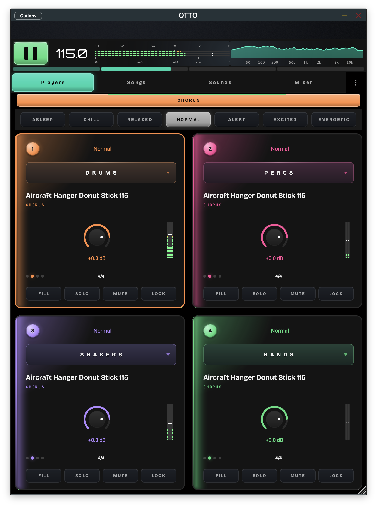
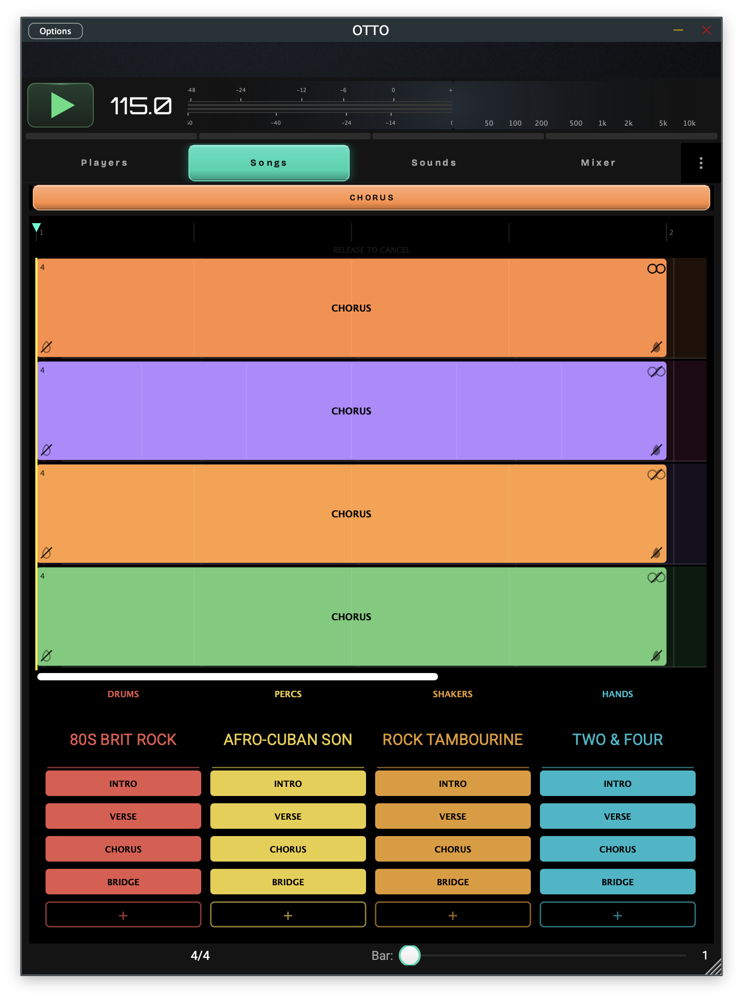
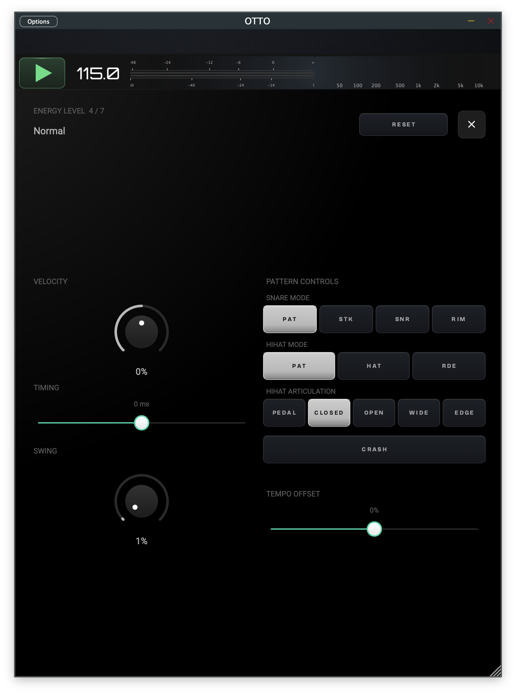
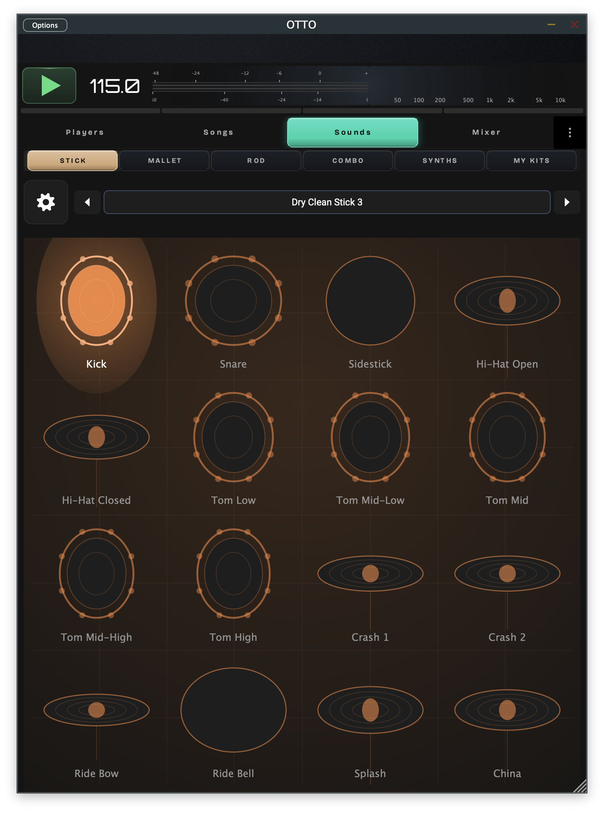
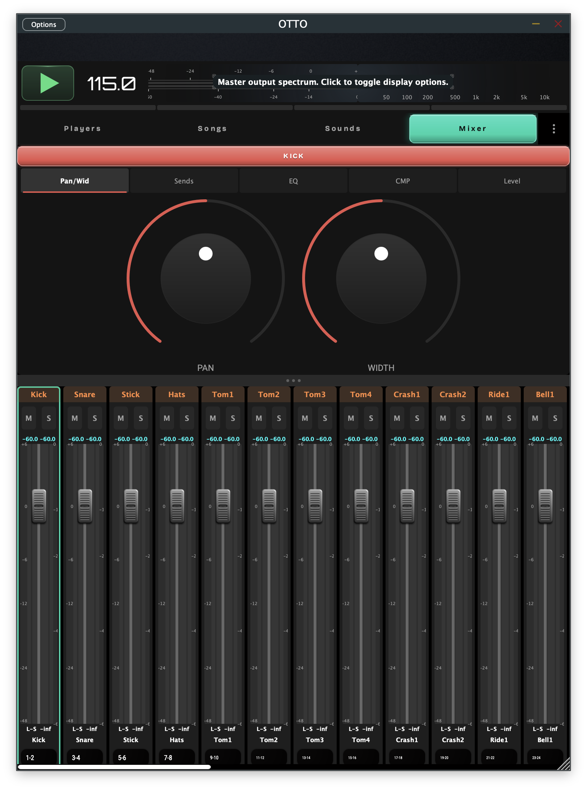
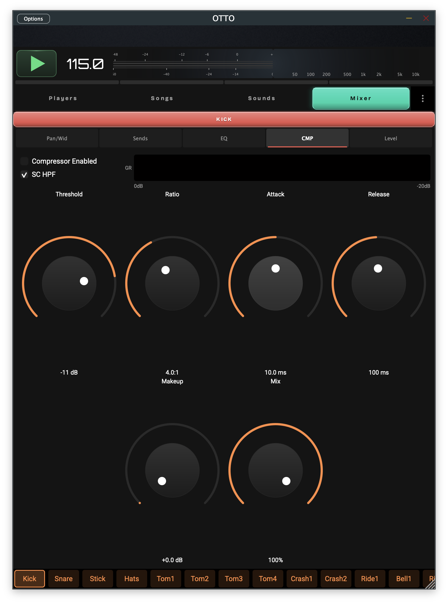
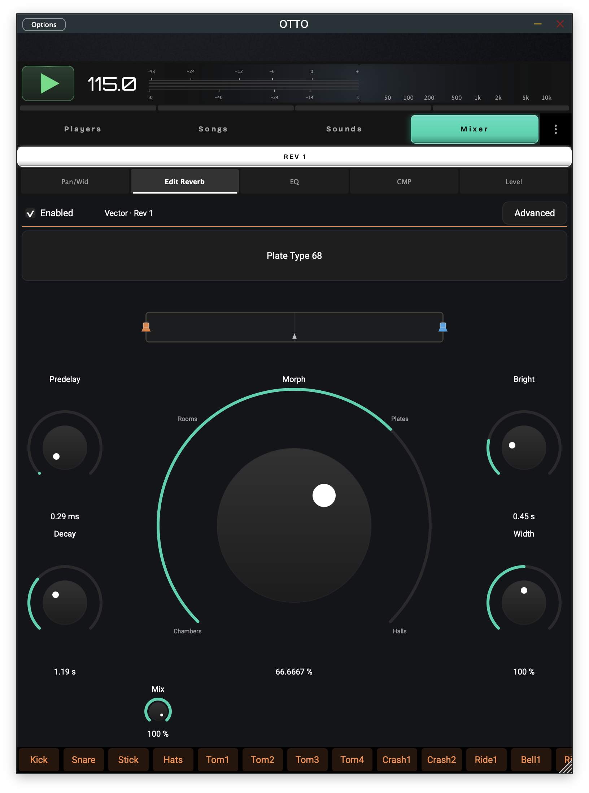
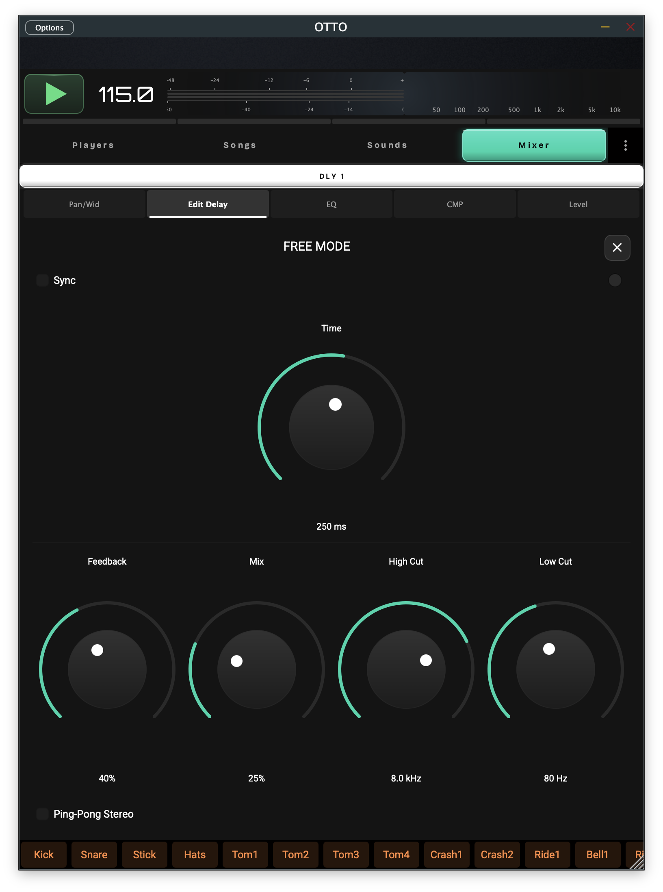
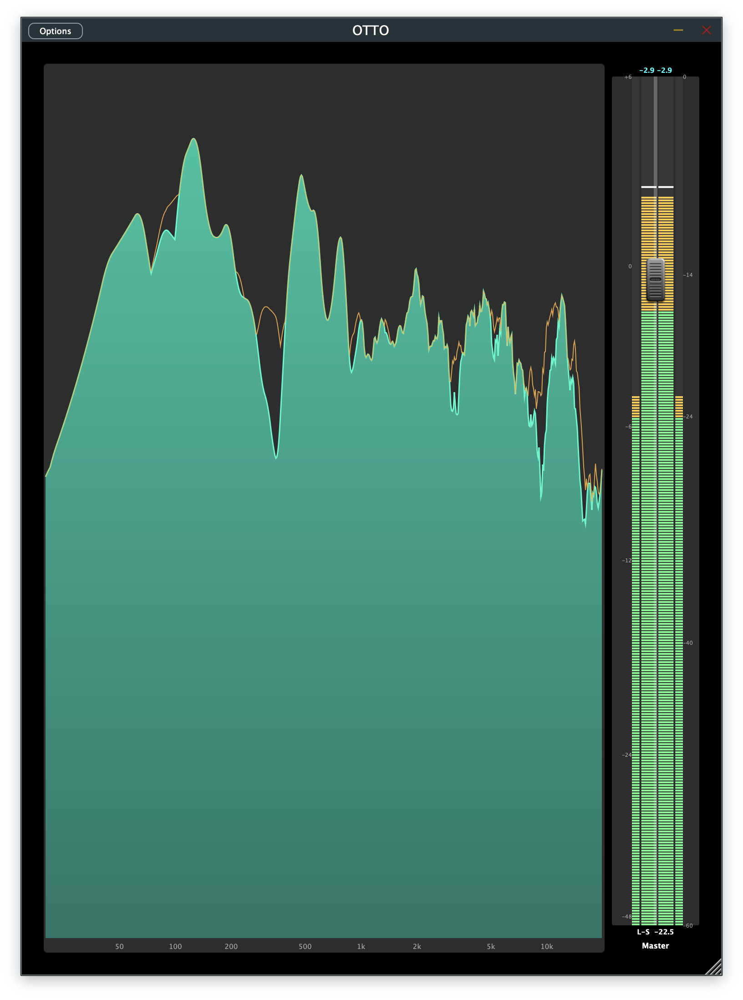
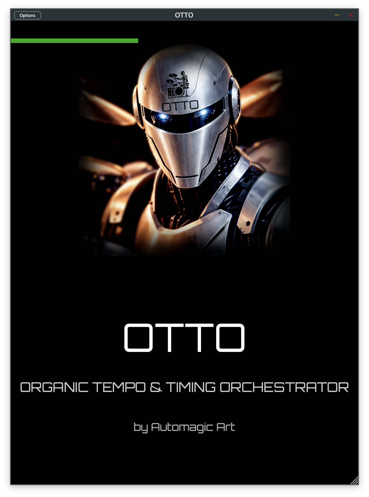

OTTO
Organic Tempo and Time Orchestrator. A four-player drum-arrangement instrument that breathes like a real drummer — played, not programmed.
The Problem
Drum machines sound robotic because every hit lands on a perfect grid at one fixed intensity. Real rhythm sections breathe — they shift energy, push and pull feel, and arrange parts that answer one another. OTTO brings that to electronic drums: four independent players, each with its own kit and part, performed through an energy system that changes how a pattern feels without changing the notes.
Key Features
- Four independent players - Each with its own role (Drums, Percs, Shakers, Hands), kit, part, and mixer channel, sharing a single transport
- Energy-driven feel - Seven energy levels, from Asleep to Energetic, reshape velocity, timing, and articulation in real time without altering the underlying pattern
- Role-based arrangement - Patterns carry a section role and energy and are placed on each player's lane to build a living performance
- Hybrid sound generation - Every kit blends sampled and procedurally-synthesized voices, decided per articulation
- Built for the stage - Strict real-time discipline keeps timing rock-solid; OTTO is played live, not programmed
- One engine, two lives - The same code runs as a standalone instrument or an embeddable engine
- Flexible output routing - A stereo sum, a per-player split, or a per-element split, all from one shared mixer
Screenshots










White Paper
OTTO is documented in depth — its first principles, the four independent players, role-bearing pattern playback, energy-driven feel, and the real-time discipline that keeps timing rock-solid on stage.
Read the OTTO White PaperFX Modules
OTTO's signal path is shaped by a family of in-house effects modules, shared with IDA — including genuinely new approaches to both compression and reverb:
Licensing
OTTO's software is open source (AGPLv3). The included drum samples are free to use in your music productions, but the samples themselves cannot be redistributed.